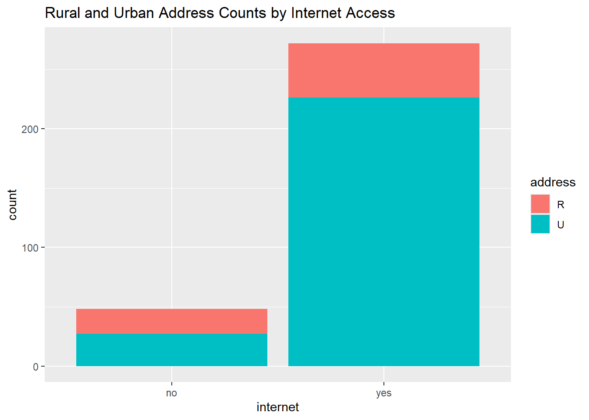
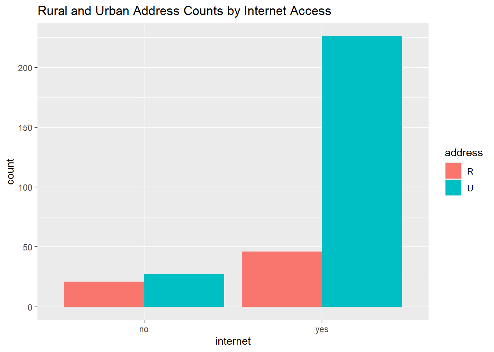
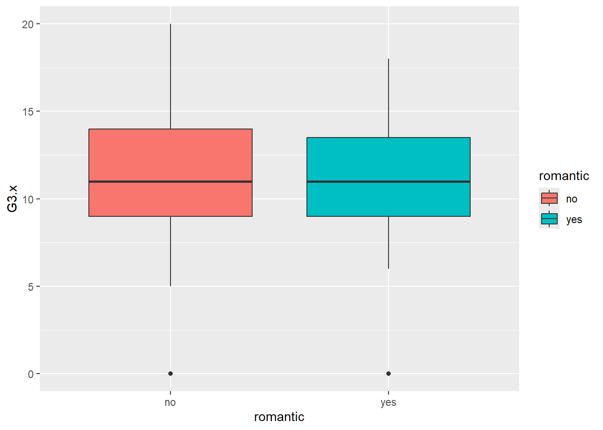
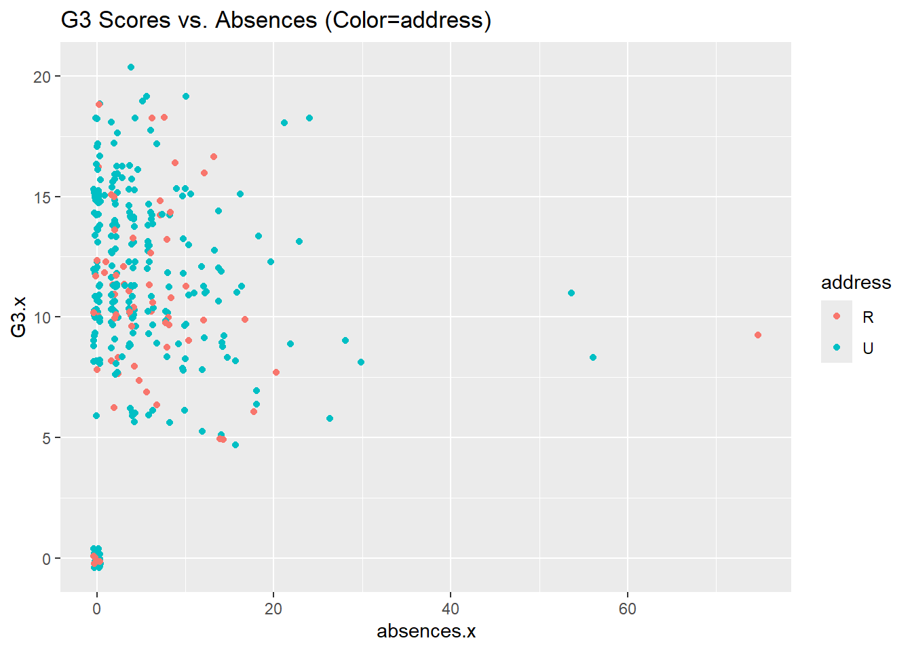
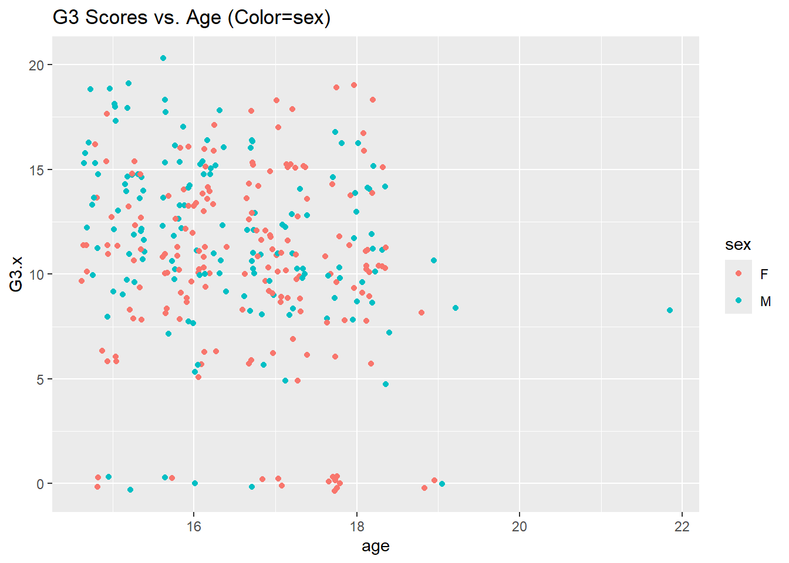
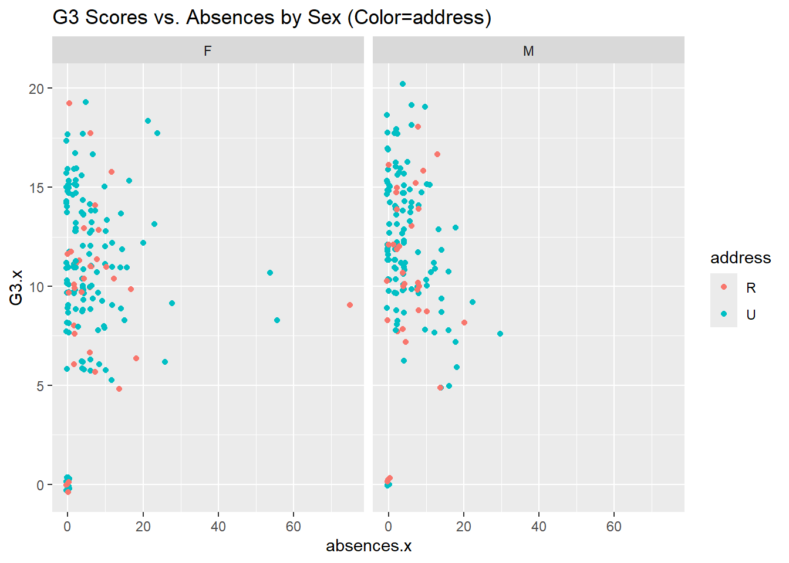
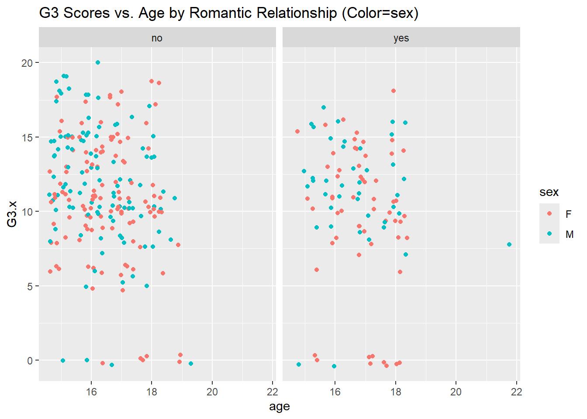
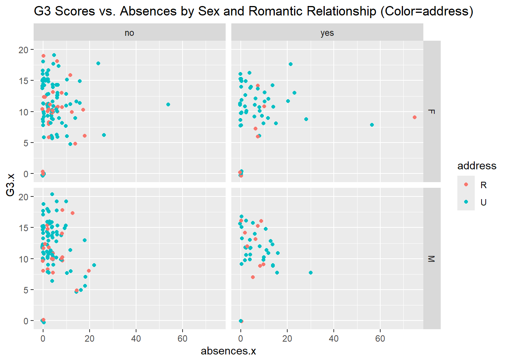
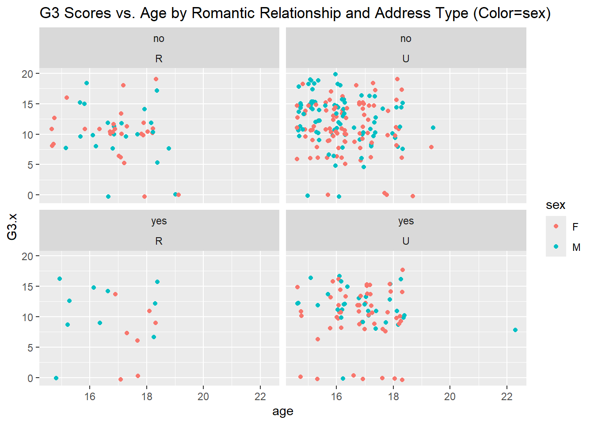

Warning in inner_join(math_df, port_df, by = c("school", "sex", "age", "address", : Detected an unexpected many-to-many relationship between `x` and `y`.
ℹ Row 79 of `x` matches multiple rows in `y`.
ℹ Row 79 of `y` matches multiple rows in `x`.
ℹ If a many-to-many relationship is expected, set `relationship =
"many-to-many"` to silence this warning.
There is an issue here with the inner join on this set of variables, which is that the function does not know which rows match up with which in the two datasets. If we use more variables, that may help narrow down which row goes to which:
# A tibble: 6 × 38
school sex age address famsize Pstatus Medu Fedu Mjob Fjob reason
<chr> <chr> <dbl> <chr> <chr> <chr> <dbl> <dbl> <chr> <chr> <chr>
1 GP F 18 U GT3 A 4 4 at_home teacher course
2 GP F 17 U GT3 T 1 1 at_home other course
3 GP F 15 U GT3 T 4 2 health servic… home
4 GP F 16 U GT3 T 3 3 other other home
5 GP M 16 U LE3 T 4 3 services other reput…
6 GP M 16 U LE3 T 2 2 other other home
# ℹ 27 more variables: guardian <chr>, traveltime <dbl>, studytime <dbl>,
# failures <dbl>, schoolsup <chr>, famsup <chr>, paid.x <chr>,
# activities <chr>, nursery <chr>, higher <chr>, internet <chr>,
# romantic <chr>, famrel <dbl>, freetime <dbl>, goout <dbl>, Dalc <dbl>,
# Walc <dbl>, health <dbl>, absences.x <dbl>, G1.x <dbl>, G2.x <dbl>,
# G3.x <dbl>, paid.y <chr>, absences.y <dbl>, G1.y <dbl>, G2.y <dbl>,
# G3.y <dbl>
print(nrow(combo_df)) # 320 students
[1] 320
Note: There are only 320 students now rather than the 382 that we saw before. Not all students are in both datasets.
Let’s look at the following 4 categorical variables:
address
internet
traveltime
studytime
Converting these variables to factors:
# create function since code is repeated 3 timesconvert_4_vars_to_factor <-function(df){return (df |>mutate(address=as.factor(address),internet=as.factor(internet),traveltime=as.factor(traveltime),studytime=as.factor(studytime) ))}math_df <-convert_4_vars_to_factor(math_df)port_df <-convert_4_vars_to_factor(port_df)combo_df <-convert_4_vars_to_factor(combo_df)head(math_df)
# A tibble: 6 × 33
school sex age address famsize Pstatus Medu Fedu Mjob Fjob reason
<chr> <chr> <dbl> <fct> <chr> <chr> <dbl> <dbl> <chr> <chr> <chr>
1 GP F 18 U GT3 A 4 4 at_home teacher course
2 GP F 17 U GT3 T 1 1 at_home other course
3 GP F 15 U LE3 T 1 1 at_home other other
4 GP F 15 U GT3 T 4 2 health servic… home
5 GP F 16 U GT3 T 3 3 other other home
6 GP M 16 U LE3 T 4 3 services other reput…
# ℹ 22 more variables: guardian <chr>, traveltime <fct>, studytime <fct>,
# failures <dbl>, schoolsup <chr>, famsup <chr>, paid <chr>,
# activities <chr>, nursery <chr>, higher <chr>, internet <fct>,
# romantic <chr>, famrel <dbl>, freetime <dbl>, goout <dbl>, Dalc <dbl>,
# Walc <dbl>, health <dbl>, absences <dbl>, G1 <dbl>, G2 <dbl>, G3 <dbl>
head(port_df)
# A tibble: 6 × 33
school sex age address famsize Pstatus Medu Fedu Mjob Fjob reason
<chr> <chr> <dbl> <fct> <chr> <chr> <dbl> <dbl> <chr> <chr> <chr>
1 GP F 18 U GT3 A 4 4 at_home teacher course
2 GP F 17 U GT3 T 1 1 at_home other course
3 GP F 15 U LE3 T 1 1 at_home other other
4 GP F 15 U GT3 T 4 2 health servic… home
5 GP F 16 U GT3 T 3 3 other other home
6 GP M 16 U LE3 T 4 3 services other reput…
# ℹ 22 more variables: guardian <chr>, traveltime <fct>, studytime <fct>,
# failures <dbl>, schoolsup <chr>, famsup <chr>, paid <chr>,
# activities <chr>, nursery <chr>, higher <chr>, internet <fct>,
# romantic <chr>, famrel <dbl>, freetime <dbl>, goout <dbl>, Dalc <dbl>,
# Walc <dbl>, health <dbl>, absences <dbl>, G1 <dbl>, G2 <dbl>, G3 <dbl>
head(combo_df)
# A tibble: 6 × 38
school sex age address famsize Pstatus Medu Fedu Mjob Fjob reason
<chr> <chr> <dbl> <fct> <chr> <chr> <dbl> <dbl> <chr> <chr> <chr>
1 GP F 18 U GT3 A 4 4 at_home teacher course
2 GP F 17 U GT3 T 1 1 at_home other course
3 GP F 15 U GT3 T 4 2 health servic… home
4 GP F 16 U GT3 T 3 3 other other home
5 GP M 16 U LE3 T 4 3 services other reput…
6 GP M 16 U LE3 T 2 2 other other home
# ℹ 27 more variables: guardian <chr>, traveltime <fct>, studytime <fct>,
# failures <dbl>, schoolsup <chr>, famsup <chr>, paid.x <chr>,
# activities <chr>, nursery <chr>, higher <chr>, internet <fct>,
# romantic <chr>, famrel <dbl>, freetime <dbl>, goout <dbl>, Dalc <dbl>,
# Walc <dbl>, health <dbl>, absences.x <dbl>, G1.x <dbl>, G2.x <dbl>,
# G3.x <dbl>, paid.y <chr>, absences.y <dbl>, G1.y <dbl>, G2.y <dbl>,
# G3.y <dbl>
Task 2: Summarize the Data
Combined data - how is it stored?
head(combo_df)
# A tibble: 6 × 38
school sex age address famsize Pstatus Medu Fedu Mjob Fjob reason
<chr> <chr> <dbl> <fct> <chr> <chr> <dbl> <dbl> <chr> <chr> <chr>
1 GP F 18 U GT3 A 4 4 at_home teacher course
2 GP F 17 U GT3 T 1 1 at_home other course
3 GP F 15 U GT3 T 4 2 health servic… home
4 GP F 16 U GT3 T 3 3 other other home
5 GP M 16 U LE3 T 4 3 services other reput…
6 GP M 16 U LE3 T 2 2 other other home
# ℹ 27 more variables: guardian <chr>, traveltime <fct>, studytime <fct>,
# failures <dbl>, schoolsup <chr>, famsup <chr>, paid.x <chr>,
# activities <chr>, nursery <chr>, higher <chr>, internet <fct>,
# romantic <chr>, famrel <dbl>, freetime <dbl>, goout <dbl>, Dalc <dbl>,
# Walc <dbl>, health <dbl>, absences.x <dbl>, G1.x <dbl>, G2.x <dbl>,
# G3.x <dbl>, paid.y <chr>, absences.y <dbl>, G1.y <dbl>, G2.y <dbl>,
# G3.y <dbl>
Notes:
most columns are of type character
character type variables are not always intuitive (e.g. value of ‘A’ for Pstatus means the parents live apart)
character type column names can be hard to read as well (e.g. ‘Dalc’ means workday alcohol consumption)
many columns of type double are not numerical, e.g. Medu (mother’s education level)
columns not used for joining have column names appended with ‘.x’ (for math dataset values) and ‘.y’ (for Portuguese dataset values)
, , = 1
no yes
R 7 15
U 6 53
, , = 2
no yes
R 9 16
U 18 114
, , = 3
no yes
R 2 12
U 2 40
, , = 4
no yes
R 3 3
U 1 19
Reading the tables:
253 of the 320 students in the dataset have urban addresses
Of the 67 students with a rural address, 21 do not have internet access at home, and 46 of them do.
For students with the most studytime (studytime=4), half of those with rural addresses have internet access (3 of 6).
# conditional two-way tables# by subsetting data -----> filter out urban addresses:filtered_df <- combo_df |>filter(address=='R')cat("Internet and studytime contingency table, filtered for rural address:")
Internet and studytime contingency table, filtered for rural address:
`summarise()` has grouped output by 'address'. You can override using the
`.groups` argument.
# A tibble: 2 × 3
# Groups: address [2]
address no yes
<fct> <int> <int>
1 R 21 46
2 U 27 226
Bar graphs:
# suppress output# base plotbase_plot <-ggplot(data = combo_df |>group_by(address, internet) |>summarize(count =n()), aes(x = internet, y = count, fill = address)) +ggtitle("Rural and Urban Address Counts by Internet Access")
# stackedbase_plot +geom_bar(stat ="identity")

# side-by-sidebase_plot +geom_bar(position ="dodge", stat ="identity")

Numeric Variables
Numeric Variables: Age, absences, G1, G2, G3
Measures of center and spread for absences.x, G1.x, and G3.x:
# make lists for choosing columnsall_num_vars <-c("age", "absences.x", "absences.y", "G1.x", "G1.y", "G2.x", "G2.y", "G3.x", "G3.y")center_vars <-c("absences.x", "G1.x", "G3.x")# function for finding measures of center and spread since code is repeated multiple timesfind_center_and_spread <-function(df) {return(df|>summarize(across(all_of(center_vars), list("mean"= mean, "median"= median, "sd"=sd, "IQR"=IQR), .names ="{.fn}_{.col}")))}# find measures of center and spread for all studentsall_measures <-find_center_and_spread(combo_df)all_measures
Center for grades is fairly consistent across grading periods G1 and G3.
All means and medians are fairly close except for those of absences; the distribution for absences seems skewed.
The standard deviation for absences is large compared to the mean and median.
Rural students have more absences and lower scores than students as a whole.
Students with rural addresses or a romantic relationship have a greater number of absences on average, but the same median number of absences, which shows that their distribution of absences is even more skewed than for students as a whole.
Measures of center and spread across single grouping variable:
# group by sexsex_measures <- combo_df |>group_by(sex) |>find_center_and_spread()sex_measures
The number of absences for females is more spread out than for males, and there are some higher values (possibly outliers) that are skewing the data.
The centers of grades are higher for male students.
Measures of center and spread across two grouping variables:
# group by sex and internetsex_internet_measures <- combo_df |>group_by(sex, internet) |>find_center_and_spread()
`summarise()` has grouped output by 'sex'. You can override using the `.groups`
argument.
sex_internet_measures
# A tibble: 4 × 14
# Groups: sex [2]
sex internet mean_absences.x median_absences.x sd_absences.x IQR_absences.x
<chr> <fct> <dbl> <dbl> <dbl> <dbl>
1 F no 4.19 4 3.41 4
2 F yes 6.13 3 10.2 7.5
3 M no 3.71 2 4.97 3
4 M yes 5.14 4 5.48 6
# ℹ 8 more variables: mean_G1.x <dbl>, median_G1.x <dbl>, sd_G1.x <dbl>,
# IQR_G1.x <dbl>, mean_G3.x <dbl>, median_G3.x <dbl>, sd_G3.x <dbl>,
# IQR_G3.x <dbl>
Notes:
Students with internet access have a greater average number of absences, and those that are female and have internet access have a much larger spread in absence data.
The largest spread in G3 grades is for males without internet access, and the smallest is for females without internet access. The difference between these two is large, suggesting there may be a differential effect on males and females of not having internet access.
Expectedly, G1 and G3 have a strong positive correlation since G3 is calculated from G1. This information occupies the lower right 6x6 matrix of the correlation matrix.
The next expected correlation is between absences in the math dataset and absences in the Portuguese dataset.
The strongest unanticipated linearity is a negative relationship between age and g3, suggesting that older students have lower G3 scores.
Histogram, kernel density plot, and boxplot for G3.x across internet value:
# boxplotggplot(combo_df) +geom_boxplot(aes(x = romantic, y = G3.x, fill = romantic))

Notes:
Students with a romantic relationship made up a larger portion of students with a G3 score of 0.
Scatterplots with G3.x variable:
ggplot(combo_df, aes(x = absences.x, y = G3.x, color = address)) +geom_point(position ="jitter") +ggtitle("G3 Scores vs. Absences (Color=address)")

ggplot(combo_df, aes(x = age, y = G3.x, color = sex)) +geom_point(position ="jitter") +ggtitle("G3 Scores vs. Age (Color=sex)")

Notes:
There are 3 outlier points in absences.x that are likely obscuring patterns in the data.
Now with faceting:
ggplot(combo_df, aes(x = absences.x, y = G3.x, color = address)) +geom_point(position ="jitter") +ggtitle("G3 Scores vs. Absences by Sex (Color=address)") +facet_wrap(~ sex)

ggplot(combo_df, aes(x = age, y = G3.x, color = sex)) +geom_point(position ="jitter") +ggtitle("G3 Scores vs. Age by Romantic Relationship (Color=sex)") +facet_wrap(~ romantic)

Notes:
The 3 outliers in the absences data are all female.
Now with faceting of 2 variables:
ggplot(combo_df, aes(x = absences.x, y = G3.x, color = address)) +geom_point(position ="jitter") +ggtitle("G3 Scores vs. Absences by Sex and Romantic Relationship (Color=address)") +facet_grid(sex ~ romantic)

ggplot(combo_df, aes(x = age, y = G3.x, color = sex)) +geom_point(position ="jitter") +ggtitle("G3 Scores vs. Age by Romantic Relationship and Address Type (Color=sex)") +facet_wrap(romantic ~ address)

Notes:
The females with rural addresses in a romantic relationship are older than the males in the same category.